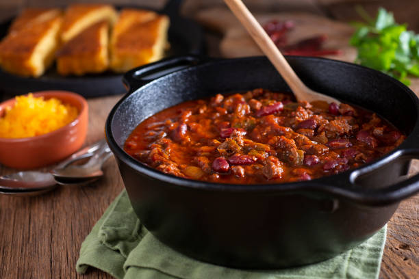

Chili is great in the fall.
Chili Ingredients:
- 1 lb. ground beef
- 2 cups fresh or canned tomatoes
- 2 cans of kidney beans
- 1 small can tomato paste
- 1 small chopped onion
- 1 jalapeno pepper
- 1 green pepper
- 1 tablespoon chili powder
- 3 cups water
Preparation Instructions:
- brown beef and drain grease
- add remaining ingredients to the beef in a
pot
- cook on medium heat stirring occasionally for
at least 1 hour
Return to Index